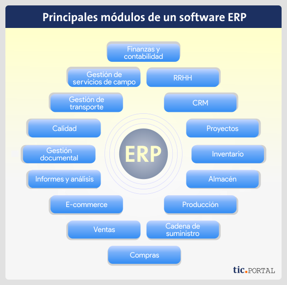

Introducción
Un ERP (Enterprise Resource Planning) es un sistema de gestión empresarial que integra todos los procesos esenciales de una empresa en un único software: contabilidad, compras, producción, ventas, recursos humanos, inventario, etc.

¿Para qué sirve?
- Centralizar la información de toda la empresa.
- Automatizar procesos que antes se hacían manualmente.
- Facilitar la toma de decisiones con información actualizada y precisa.
- Mejorar la eficiencia y reducir errores operativos.
¿Qué funciones realizan?
Depende del ERP, pero en general:
- Gestión financiera (contabilidad, tesorería, facturación).
- Gestión de inventarios (entradas, salidas, almacenes).
- Gestión de compras y ventas (pedidos, proveedores, clientes).
- Gestión de producción (planificación, órdenes de trabajo).
- Gestión de proyectos (planificación de tareas y recursos).
- Gestión de recursos humanos (nóminas, contrataciones, desempeño).
- Análisis y reportes (reportes de ventas, KPIs, auditorías).
Estudio Comparativo de Productos ERP
¿Qué tipos de módulos hay? ¿Cómo los clasificarías?
Un módulo es una parte especializada del ERP que cumple una función concreta.
- Financieros: Contabilidad, tesorería, facturación.
- Operacionales: Compras, ventas, inventario, producción.
- Logísticos: Gestión de almacenes, cadena de suministro.
- Recursos humanos: Nómina, selección, evaluación de desempeño.
- Relaciones con clientes (CRM): Seguimiento de clientes y ventas.
- Business Intelligence (BI): Reportes y análisis de datos.
Clasificación general:
- Núcleo (esenciales para operar: contabilidad, ventas, inventarios).
- Avanzados o adicionales (especializados: BI, CRM, proyectos).
¿Puedo instalar cualquier módulo?
Depende:
- Algunos ERP permiten instalar solo módulos compatibles con la versión o el sistema base que tienes.
- Algunos módulos requieren otros módulos previos para funcionar (por ejemplo, un módulo de producción necesita que tengas inventarios activos).
- En ERPs flexibles (como Odoo, SAP), puedes agregar módulos según tu necesidad y crecimiento.
¿Qué es la integración de módulos y por qué es beneficiosa?
Integración significa que los módulos se comunican entre sí de manera automática.
- Evitas duplicar información (por ejemplo, los datos de un cliente de ventas se usan también en facturación y envíos).
- Aceleras procesos: una venta registrada automáticamente genera una orden de producción o de envío.
- Mejoras la precisión: reduces errores manuales entre áreas.
- Tienes visibilidad completa: puedes ver toda la operación de tu empresa en un solo lugar, en tiempo real.
Características y funcionalidades
- SAP Business One: Ofrece una funcionalidad operativa amplia con alta modularidad y personalización. Es ideal para empresas que requieren un sistema robusto con múltiples módulos integrados.
- Microsoft Dynamics 365 Business Central (Navision): También cuenta con una funcionalidad operativa extensa y un alto nivel de personalización. Se integra bien con otros productos de Microsoft.
- Odoo: Es altamente modular y fácil de usar. Su integración entre módulos es fluida, lo que lo hace atractivo para pequeñas y medianas empresas.
Requisitos
- SAP Business One: Funciona en entornos Windows y Web. Requiere un partner para su implementación.
- Microsoft Dynamics 365 Business Central (Navision): Basado en Web, con actualizaciones continuas. También requiere un partner.
- Odoo: Basado en web, con actualizaciones continuas. No requiere un partner, pero sí personal informático interno.
Orientación al mercado
- SAP Business One: Enfocado en pequeñas y medianas empresas con necesidades avanzadas de gestión.
- Microsoft Dynamics 365 Business Central (Navision): Dirigido a pequeñas y medianas empresas, especialmente aquellas que ya usan productos de Microsoft.
- Odoo: Ideal para pequeñas y medianas empresas, con una versión comunitaria gratuita y una versión empresarial con soporte.
Tipos de licencias y precios
- SAP Business One: Se puede adquirir mediante compra o alquiler. Su coste total es alto debido a su modularidad y funcionalidad avanzada.
- Microsoft Dynamics 365 Business Central (Navision): También ofrece opciones de compra o alquiler, con un coste medio.
- Odoo: Dispone de una versión comunitaria gratuita y una versión empresarial con suscripción.